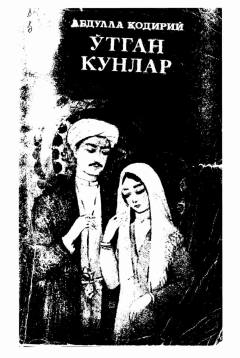

OKO'zbek adabiyotidagi ilk roman bo'lib, xonlik davri fojitalarini hikoya qiladi.
Mazkur asar o'zbek adabiyotidagi ilk yirik roman bo'lib, o'tmishimizning murakkab va og'ir xonlik davrlari voqealarini o'z ichiga oladi. Roman orqali muallif xalqimizning tarixiy hayoti, urf-odatlari hamda fojiali taqdirlarini yorqin badiiy obrazlar vositasida ochib bergan. Asar yangi davr o'zbek romanchiligining ilk tajribasi va namunasi sifatida yozilgan.